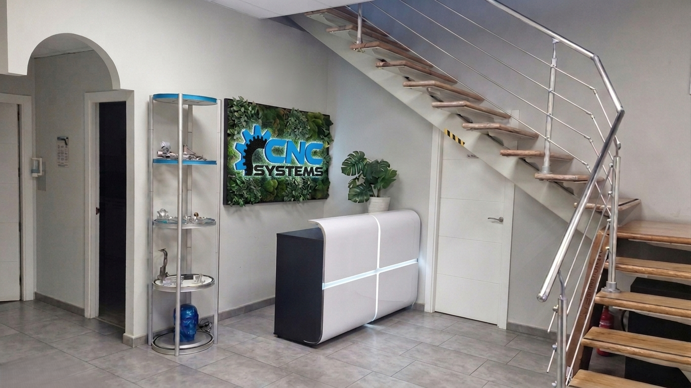
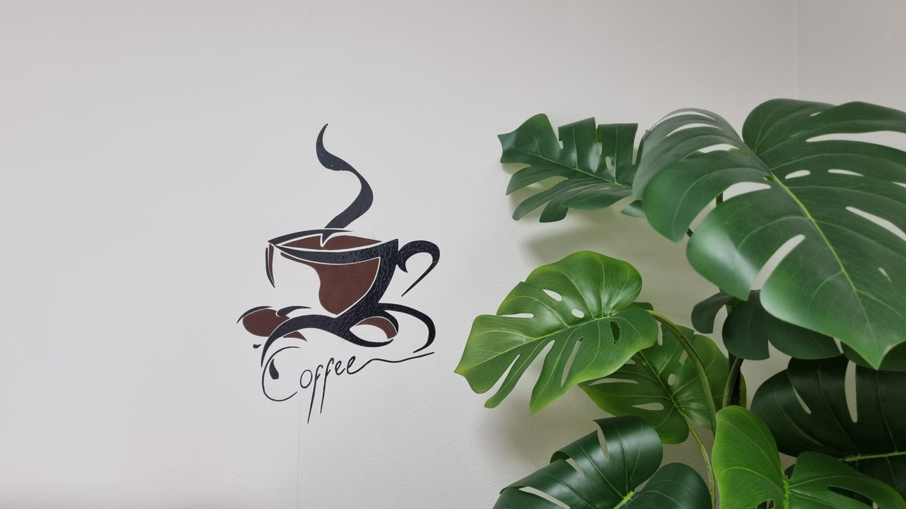
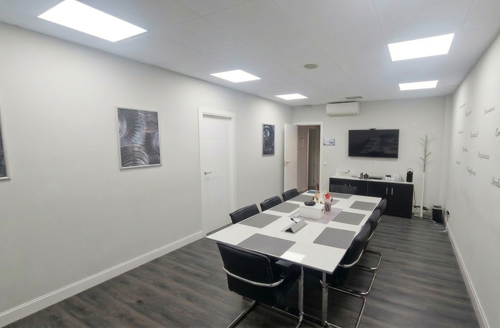
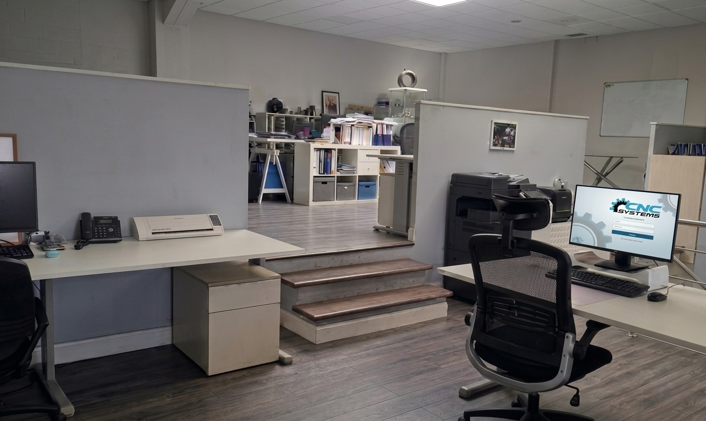
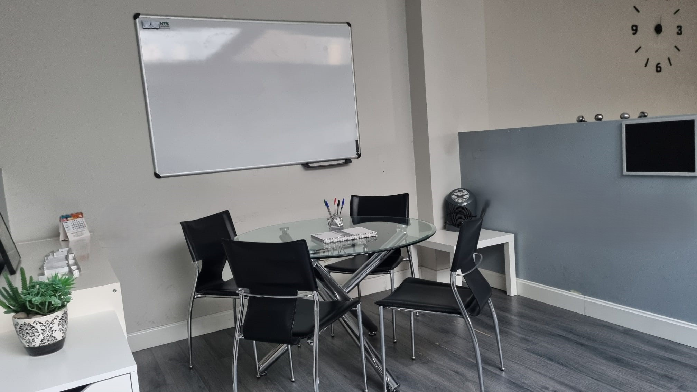

Conoce las áreas clave donde gestionamos el soporte a nuestros clientes

La primera toma de contacto con nuestros clientes. Un espacio moderno donde la transparencia y el servicio profesional comienzan desde el primer paso.

Un espacio pensado para el descanso y la desconexión del equipo. Un entorno cómodo donde hacer una pausa y recargar energía durante la jornada.

Donde analizamos los proyectos de mantenimiento a gran escala y colaboramos con los responsables de producción para optimizar sus procesos.

El núcleo administrativo y de ingeniería. Aquí coordinamos a nuestros técnicos de campo y gestionamos toda la documentacion requerida por nuestros clientes.

Un espacio destinado a la coordinación y atención cercana. Un entorno funcional donde se realizan reuniones rápidas y se comparten ideas de forma ágil.
Un área logística y centro de reparaciones para ofrecer respuestas inmediatas.